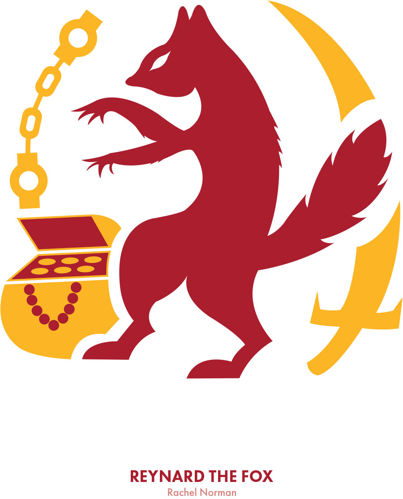
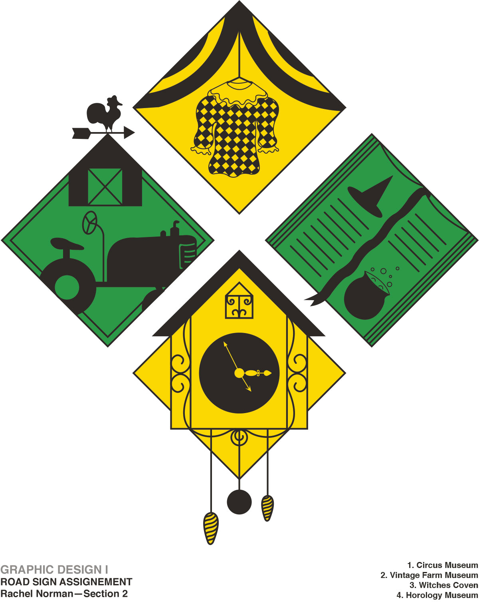
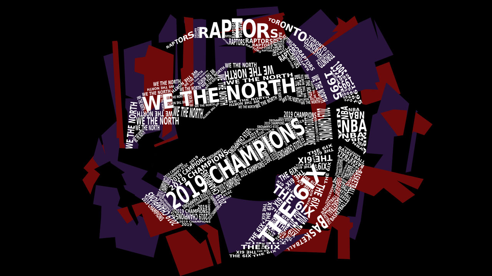
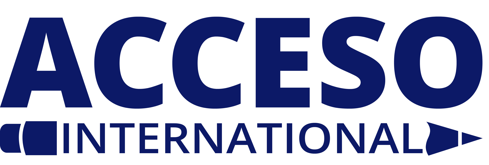

Designs
-

Reynard the Fox
Symbol Designs
This symbol I created was based on the story of Reynard the Fox. The story of Reynard the Fox is based in the medieval time in Europe. The story is about this criminal fox who is also a trickster and is trying to be captured so that he can pay for his crimes.
-

Cyrano de Bergerac
Theatre Poster
Cyrano de Bergerac is a French play written by Edmond Rostand. It takes place in Paris in 1640. It follows the life of Cyrano who is a cadet and poet.
-

Road Signs
Designs
The themes of each sign are; circus museum, vintage farm museum, witches coven and horology museum.
-

Visual Harmony
Magazine Spread
This is a two page spread magazine layout. This was an assignment from the Typography course in my first year of the graphic design program at Algonquin College.
-

Toronto Raptors
Logo Design
I created this design before entering the graphic design program at Algonquin College. I took inspiration from the Toronto Raptors team colours and previous designs to make my own design.
-

ACCESO International
Logo Design
ACCESO International is a Canadian organization that helps people get access to education. I have volunteered with this organization for many years and I had the pleasure of re-designing their logo.